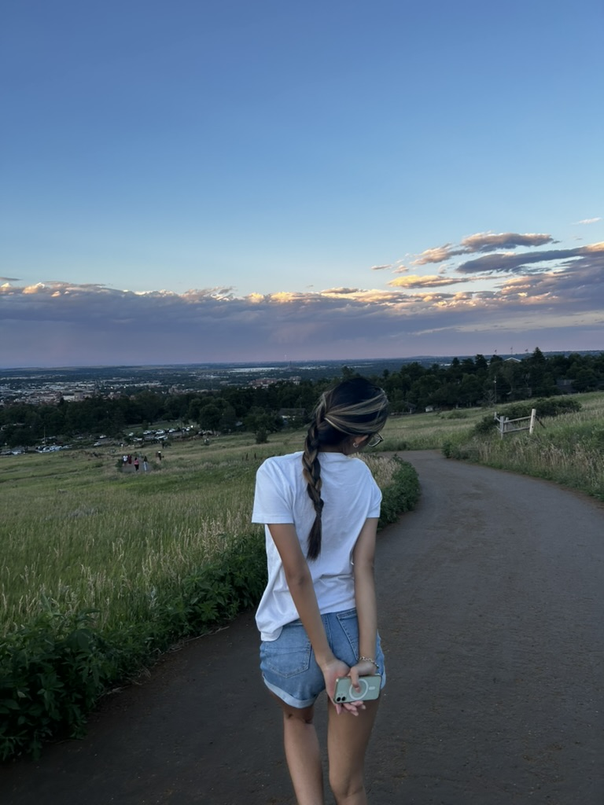

Published on: October 2024
By: Way Zheng
Summer 2024 was one of the most transformative experiences of my career and personal growth. I spent the season in Boulder, Colorado, working as a Software Engineer Intern at The Trade Desk. In this blog, I’ll share the highlights of my summer, the projects I worked on, and what I learned along the way.
Boulder is an amazing place, full of nature and opportunities for outdoor adventures. I spent my weekends hiking the Flatirons, visiting Pearl Street, and exploring local restaurants. The work-life balance here was refreshing, giving me the chance to both grow professionally and enjoy the outdoors.
My internship at The Trade Desk in Boulder was an incredible opportunity to deepen my skills in software engineering. I worked on real-world projects, including developing key features for their ad tech platform. One of the highlights was getting to optimize the encryption of S3 key storage—a task that was both challenging and rewarding.
Working in Boulder was not just about the technical skills. I learned how to work in a collaborative, fast-paced environment and manage complex projects from start to finish. Some key takeaways include:
Beyond the work, Boulder provided me with a new appreciation for balancing life and work. The ability to work on cutting-edge technology during the week and explore breathtaking landscapes on the weekends made the summer unforgettable.
My summer in Boulder was an unforgettable experience that not only allowed me to grow as a software engineer but also as a person. I am excited to apply the skills I’ve learned to future projects and look forward to what’s next in my career!